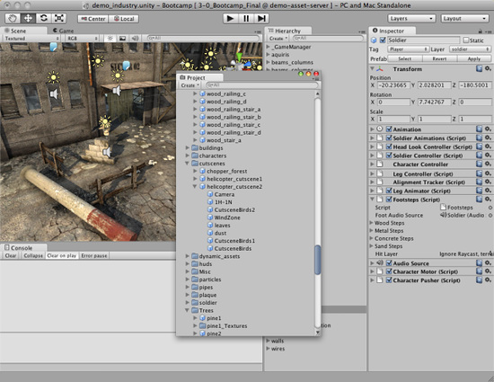
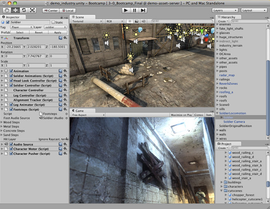
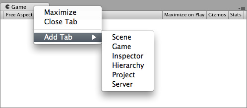

Customizing Your Workspace
Customizing Your Workspace
You can customize your Layout of Views by click-dragging the Tab of any View to one of several locations. Dropping a Tab in the Tab Area of an existing window will add the Tab beside any existing Tabs. Alternatively, dropping a Tab in any Dock Zone will add the View in a new window.

Views can be docked to the sides or bottom of any existing window
Tabs can also be detached from the Main Editor Window and arranged into their own floating Editor Windows. Floating Windows can contain arrangements of Views and Tabs just like the Main Editor Window.

Floating Editor Windows are the same as the Main Editor Window, except there is no Toolbar
Floating Editor Windows are the same as the Main Editor Window, except there is no Toolbar
When you've created a Layout of Editor Windows, you can Save the layout and restore it any time. You do this by expanding the Layout drop-down (found on the Toolbar) and choosing . Name your new layout and save it, then restore it by simply choosing it from the Layout drop-down.

A completely custom Layout
A completely custom Layout
At any time, you can right-click the tab of any view to view additional options like Maximize or add a new tab to the same window.

Page last updated: 2010-09-07